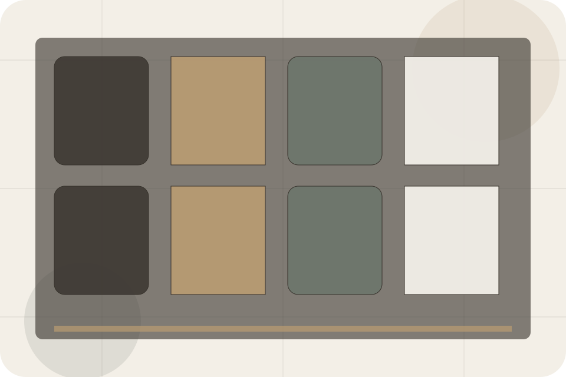
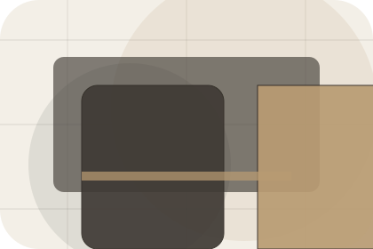
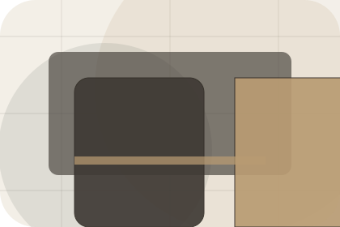
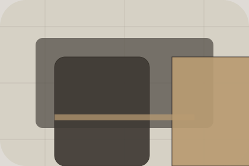

Gallery / 01
Gallery by Stay
Gallery shaped for hospitality, hotels & guest accommodation decisions.
Gallery opens as a clear hospitality decision hub: what Stay offers, who it helps, why it matters, and which route to take first.
The first screen combines positioning, proof, primary action, and fast internal navigation, so people can act immediately or compare the rest of the gallery route with context.
Check availabilityPlan the visitReserve with context
Serene full-bleed stay hero
Check Availability
Select the closest route and Stay keeps the next step, proof, and follow-up expectation aligned with comfort and availability.

Gallery / 02
Compare service routes
Rooms explains the practical scope, best-fit situations, and expected outcome so hospitality visitors can compare options without decoding jargon.
The section keeps the offer concrete: what is included, who it is best for, what decision it supports, and which linked route gives the deeper detail.
Explore Gallery- 01
Best Fit
Who should use rooms and when it belongs in the gallery journey.
- 02
What Changes
The practical benefit visitors should expect after choosing this route.
- 03
Deeper Route
Where to compare details, pricing, support, or contact options before committing.
Serene full-bleed stay hero
Check Availability
Select the closest route and Stay keeps the next step, proof, and follow-up expectation aligned with comfort and availability.
Gallery / 03
Lobby inside gallery
Lobby adds hospitality context to the gallery route, using the quiet retreat booking flow structure to support comfort and availability before visitors choose a next step.
Stay uses retreat room cards and focused copy to make the decision easier to scan, aligning the section with comfort and availability rather than filling space.
Explore GalleryStay structures lobby around context, judgment, and a clear next route so visitors can compare the block quickly before they check availability.
Check AvailabilityGallery / 04
Food inside gallery
Food adds hospitality context to the gallery route, using the quiet retreat booking flow structure to support comfort and availability before visitors choose a next step.
Stay uses retreat room cards and focused copy to make the decision easier to scan, aligning the section with comfort and availability rather than filling space.
Explore Gallery
Context
Food gives the page a specific angle instead of repeating the navigation label.
Gallery / 05
Views inside gallery
Views adds hospitality context to the gallery route, using the quiet retreat booking flow structure to support comfort and availability before visitors choose a next step.
Stay uses retreat room cards and focused copy to make the decision easier to scan, aligning the section with comfort and availability rather than filling space.
Explore GalleryContext
Views gives the page a specific angle instead of repeating the navigation label.
Judgment
The retreat room cards show what to compare, what to avoid, and what matters most for hospitality, hotels & guest accommodation visitors.
Direction
The final cue points to a useful internal route so the section keeps the journey moving.
Gallery / 06
Pool inside gallery
Pool adds hospitality context to the gallery route, using the quiet retreat booking flow structure to support comfort and availability before visitors choose a next step.
Stay uses retreat room cards and focused copy to make the decision easier to scan, aligning the section with comfort and availability rather than filling space.
Explore GalleryPool gives the page a specific angle instead of repeating the navigation label.
The retreat room cards show what to compare, what to avoid, and what matters most for hospitality, hotels & guest accommodation visitors.
The final cue points to a useful internal route so the section keeps the journey moving.
Gallery / 07
Experiences inside gallery
Experiences adds hospitality context to the gallery route, using the quiet retreat booking flow structure to support comfort and availability before visitors choose a next step.
Stay uses retreat room cards and focused copy to make the decision easier to scan, aligning the section with comfort and availability rather than filling space.
Explore GalleryContext
Experiences gives the page a specific angle instead of repeating the navigation label.
Judgment
The retreat room cards show what to compare, what to avoid, and what matters most for hospitality, hotels & guest accommodation visitors.
Direction
The final cue points to a useful internal route so the section keeps the journey moving.
Gallery / 08
Details inside gallery
Details adds hospitality context to the gallery route, using the quiet retreat booking flow structure to support comfort and availability before visitors choose a next step.
Stay uses retreat room cards and focused copy to make the decision easier to scan, aligning the section with comfort and availability rather than filling space.
Explore GalleryContext
Details gives the page a specific angle instead of repeating the navigation label.
Judgment
The retreat room cards show what to compare, what to avoid, and what matters most for hospitality, hotels & guest accommodation visitors.
Direction
The final cue points to a useful internal route so the section keeps the journey moving.
Gallery / 09
Atmosphere inside gallery
Atmosphere adds hospitality context to the gallery route, using the quiet retreat booking flow structure to support comfort and availability before visitors choose a next step.
Stay uses retreat room cards and focused copy to make the decision easier to scan, aligning the section with comfort and availability rather than filling space.
Explore Gallery
Context
Atmosphere gives the page a specific angle instead of repeating the navigation label.
Gallery / 10
Check Availability
Stay closes the gallery route with a clear action, a quick reminder of the value, and a low-friction way to check availability.
Visitors who are ready can use the primary action. Visitors who are still comparing can scan the section links, proof, and support routes before they check availability.
Check AvailabilityThe final block keeps the choice simple: act now, compare one more proof route, or send enough detail for a focused response.
Check Availabilitycomfort and availability
Check Availability
A hotel site with serene full-bleed rooms, understated booking modules, experience cards, and policy calm. Gallery ends with a direct path to check availability, plus enough context for visitors who still need to compare.

Check AvailabilityImportant notes before you act
Rates, availability, cancellation, and access policies depend on selected dates and booking terms.